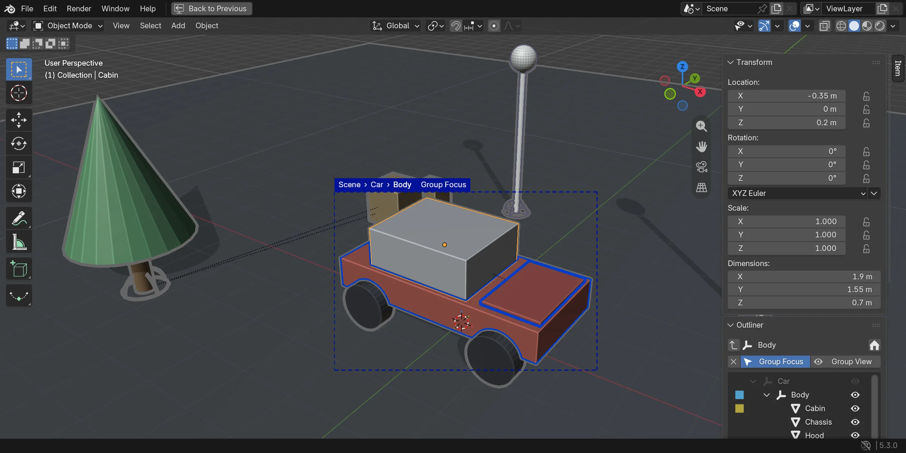
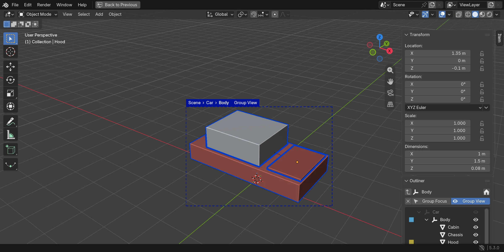
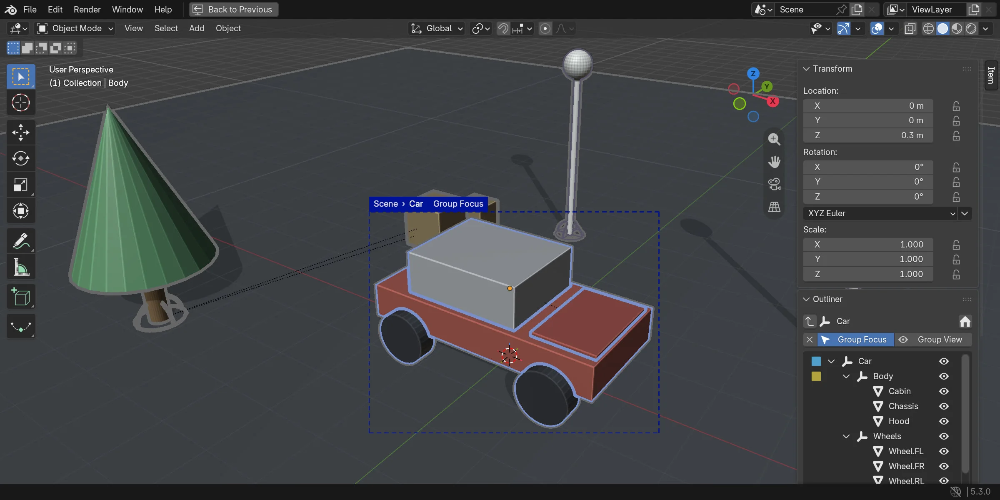
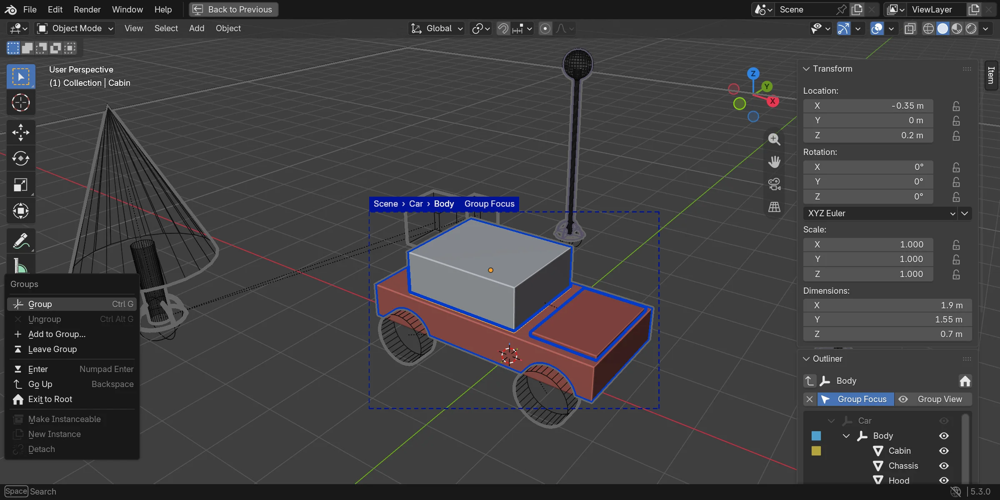

Products › Hierarchy Outliner
Hierarchy Outliner

Groups that behave like groups. Finally, in Blender.
In Maya, 3ds Max, Illustrator or Figma, a group is something you step into. You double-click it, work on its contents, and the rest of the scene stays out of your way. In Blender, parenting gives you the hierarchy but not the workflow: the Outliner is busy with collections and view layers, and nothing stops you from grabbing the wrong object.
Hierarchy Outliner brings that workflow to Blender. You get an outliner that shows parents and children only, and groups you can enter and leave from the 3D view. What you work on is outlined by role, and components work like symbols. Every move has a shortcut, and nothing is written to your file that you did not ask for.
Picture this
You select the parts of a car's body and press Ctrl+G: they are now a group, under an Empty Sphere at their common parent. You double-click the group. The rest of the scene can no longer be clicked, and each object is outlined in the color of its role. A dashed frame shows the group's bounds, and the breadcrumb Scene › Car › Body shows where you are. You add a bolt with Shift+A, and it lands inside the group. Backspace takes you back up a level.

What you get
A parent-and-child outliner

- Sidebar (N) › Outliner: your scene as a tree of parents and children. No collections, no view layers.
- Three columns, like Blender's own Outliner: state (blue = the outliner's active group, yellow = active object, orange = selected), hierarchy, and an eye to hide or show.
- Click selects, Shift+Click adds or removes, Ctrl+Click selects a whole branch, a double-click enters the group, Right-click opens the Actions menu.
- The search keeps the parents of what it finds, so you always see where an object lives.
Group and ungroup
- Ctrl+G groups the selection under a new Empty Sphere, at the closest common parent, centred on the objects. Nothing moves on screen.
- Ctrl+Alt+G dissolves the selected groups: their children go to the group's parent.
- Add to Group… opens a searchable list of every group, with its full path, like M for collections. Leave Group moves the selection up one level.
- Prefer to keep Ctrl+G for collections? Switch to the T layout: Ctrl+T groups, Alt+T ungroups.
Enter and exit groups

- Double-click an object in the 3D view to enter the group that holds it, one level at a time. Double-click empty space to step out.
- Enter does the same with the active object. Backspace goes up one level and selects the group you left.
- Inside a group, the targets are its direct children. Clicking a deeper object picks the child that contains it, the way Illustrator works.
Focus modes
Choose what the rest of the scene does while you work in a group, from the V pie menu or the panel:
- Group Focus: only the group can be selected; everything else stays visible as it is but can no longer be clicked.
- Group View: only the group is shown, in every 3D view. The outliner still lists the rest, greyed, so you can switch groups.
- Off: entering a group is only for navigating; nothing is limited.

Role outlines

- While you are inside a group, every object is outlined in the colour of its role: child, grandchild, or outside. Component instances get their own pair of colours.
- The outlines are drawn on top of the viewport. Object colours and shading stay as they are, and there is no mode to leave.
- Six colours, all adjustable. Toggle the outlines from the V pie; they hide with the viewport overlays.
Group frame and breadcrumb

- A dashed frame wraps everything the active group contains, following the objects' silhouettes as you see them.
- The breadcrumb on its corner shows the path, for example Scene › Car › Body · Group Focus.
- Double-click a step to jump there. Scene takes you back to the root.

Components

- Turn a group into a component with Make Instanceable. Its contents move to the Components layer and an instance takes their place.
- Every instance shows the same source: edit it once and they all follow.
- Add an instance from Shift+A › Component, or with New Instance, which follows the mouse like Shift+D.
- Double-click an instance (or press Enter) to enter it, like a group; once more to edit its component in isolation. Backspace from the top, Done, or Scene in the breadcrumb brings the scene back.
- Detach turns an instance back into real objects. The Components panel lists every component with its instance count.

Groups that behave

- Hide a group, hide its contents: with the eye, H or any other way. Children keep their own state and come back with the group. Alt+H reveals everything.
- Delete a group, delete its contents: X and Del remove an Empty with everything under it, with the same confirmations as Blender. Shift+X deletes it everywhere.
- New objects join the current group: anything you add (Shift+A, import, paste) lands next to the active object, inside the group you are in, like a new layer in a layer stack.

Nothing written to your file
Focus modes, frames and outlines only change what the viewport shows. Switch back to Off and everything is exactly as it was: an object you had hidden or locked yourself stays hidden or locked. Collections and view layers are never touched, so your files stay clean for everyone else on the team.